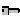
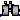
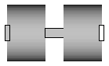
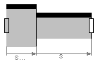
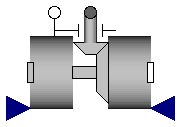
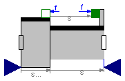

The models in this package should not be used by the user. They are designed to build up other models in the MultiBody library and some of them cannot be used in an arbitrary way and require particular knowledge how to set the options in the parameter menu. Don't use the models of this package.
| Name | Description |
|---|---|
| Revolute joint (1 rotational degree-of-freedom, 2 potential states) | |
|  Prismatic | Prismatic joint (1 translational degree-of-freedom, 2 potential states) |
|  RevoluteWithLengthConstraint | Revolute joint where the rotation angle is computed from a length constraint (1 degree-of-freedom, no potential state) |
| Prismatic joint where the translational distance is computed from a length constraint (1 degree-of-freedom, no potential state) |
 Modelica.Mechanics.MultiBody.Joints.Internal.Revolute
Modelica.Mechanics.MultiBody.Joints.Internal.Revolute
Joint where frame_b rotates around axis n which is fixed in frame_a. The two frames coincide when "phi + phi_offset = 0", where "phi_offset" is a parameter with a zero default and "phi" is the rotation angle.
In the "Advanced" menu it can be defined via parameter enforceStates that the rotation angle "phi" and its derivative shall be definitely used as states (this means that the Modelica attributes stateSelect=StateSelect.always are set on these variables). The states are usually selected automatically. In certain situations, especially when closed kinematic loops are present, it might be slightly more efficient, when using the "enforceStates" setting.
If a planar loop is present, e.g., consisting of 4 revolute joints where the joint axes are all parallel to each other, then there is no longer a unique mathematical solution and the symbolic algorithms will fail. Usually, an error message will be printed pointing out this situation. In this case, parameter planarCutJoint in the "Advanced" menu of one of the revolute joints has to be set to true. The effect is that from the 5 constraints of a usual revolute joint, 3 constraints are removed and replaced by appropriate known variables (e.g., the force in the direction of the axis of rotation is treated as known with value equal to zero; for standard revolute joints, this force is an unknown quantity).
| Type | Name | Default | Description |
|---|---|---|---|
| Boolean | animation | true | = true, if animation shall be enabled (show axis as cylinder) |
| Axis | n | {0,0,1} | Axis of rotation resolved in frame_a (= same as in frame_b) |
| Angle_deg | phi_offset | 0 | Relative angle offset (angle = phi + from_deg(phi_offset)) [deg] |
| Initialization | |||
| Temp | initType | Modelica.Mechanics.MultiBody... | Type of initialization (defines usage of start values below) |
| Angle_deg | phi_start | 0 | Initial value of rotation angle phi (fixed or guess value) [deg] |
| AngularVelocity_degs | w_start | 0 | Initial value of relative angular velocity w = der(phi) [deg/s] |
| AngularAcceleration_degs2 | a_start | 0 | Initial value of relative angular acceleration a = der(w) [deg/s2] |
| Animation | |||
| if animation = true | |||
| Distance | cylinderLength | world.defaultJointLength | Length of cylinder representing the joint axis [m] |
| Distance | cylinderDiameter | world.defaultJointWidth | Diameter of cylinder representing the joint axis [m] |
| Color | cylinderColor | Modelica.Mechanics.MultiBody... | Color of cylinder representing the joint axis |
| SpecularCoefficient | specularCoefficient | world.defaultSpecularCoeffic... | Reflection of ambient light (= 0: light is completely absorbed) |
| Advanced | |||
| Boolean | enforceStates | false | = true, if generalized variables (phi,w) shall be used as states (StateSelect.always) |
| Boolean | planarCutJoint | false | = true, if joint shall be used as cut-joint in a planar loop |
| Type | Name | Description |
|---|---|---|
| Frame_a | frame_a | Coordinate system fixed to the joint with one cut-force and cut-torque |
| Frame_b | frame_b | Coordinate system fixed to the joint with one cut-force and cut-torque |
model Revolute
"Revolute joint (1 rotational degree-of-freedom, 2 potential states)"
import SI = Modelica.SIunits;
import Cv = Modelica.SIunits.Conversions;
import T = Modelica.Mechanics.MultiBody.Frames.TransformationMatrices;
import Modelica.Mechanics.MultiBody.Types;
Interfaces.Frame_a frame_a
"Coordinate system fixed to the joint with one cut-force and cut-torque";
Interfaces.Frame_b frame_b
"Coordinate system fixed to the joint with one cut-force and cut-torque";
parameter Boolean animation=true
"= true, if animation shall be enabled (show axis as cylinder)";
parameter Modelica.Mechanics.MultiBody.Types.Axis n={0,0,1}
"Axis of rotation resolved in frame_a (= same as in frame_b)";
parameter Cv.NonSIunits.Angle_deg phi_offset=0
"Relative angle offset (angle = phi + from_deg(phi_offset))";
parameter Types.Init.Temp initType=Modelica.Mechanics.MultiBody.Types.Init.Free
"Type of initialization (defines usage of start values below)";
parameter Cv.NonSIunits.Angle_deg phi_start=0
"Initial value of rotation angle phi (fixed or guess value)";
parameter Types.AngularVelocity_degs w_start=0
"Initial value of relative angular velocity w = der(phi)";
parameter Types.AngularAcceleration_degs2 a_start=0
"Initial value of relative angular acceleration a = der(w)";
parameter SI.Distance cylinderLength=world.defaultJointLength
"Length of cylinder representing the joint axis";
parameter SI.Distance cylinderDiameter=world.defaultJointWidth
"Diameter of cylinder representing the joint axis";
input Types.Color cylinderColor=Modelica.Mechanics.MultiBody.Types.Defaults.JointColor
"Color of cylinder representing the joint axis";
input Types.SpecularCoefficient specularCoefficient = world.defaultSpecularCoefficient
"Reflection of ambient light (= 0: light is completely absorbed)";
parameter Boolean enforceStates=false
"= true, if generalized variables (phi,w) shall be used as states (StateSelect.always)";
parameter Boolean planarCutJoint=false
"= true, if joint shall be used as cut-joint in a planar loop";
SI.Angle phi(start=Cv.from_deg(phi_start), stateSelect=if enforceStates then
StateSelect.always else if planarCutJoint then StateSelect.
never else StateSelect.prefer)
"Relative rotation angle from frame_a to frame_b = phi + from_deg(phi_offset))";
SI.AngularVelocity w(stateSelect=if enforceStates then StateSelect.always else
if planarCutJoint then StateSelect.never else StateSelect.
prefer) "First derivative of angle phi (relative angular velocity)";
SI.AngularAcceleration a
"Second derivative of angle phi (relative angular acceleration)";
SI.Torque tau=0 "Driving torque in direction of axis of rotation";
SI.Angle angle(start=Cv.from_deg(phi_start+phi_offset))
"= from_deg(phi_offset) + phi";
protected
outer Modelica.Mechanics.MultiBody.World world;
parameter Real e[3]=Frames.normalize(n)
"Unit vector in direction of rotation axis, resolved in frame_a (= same as in frame_b)";
parameter Real nnx_a[3]=if abs(e[1]) > 0.1 then {0,1,0} else (if abs(e[2])
> 0.1 then {0,0,1} else {1,0,0})
"Arbitrary vector that is not aligned with rotation axis n";
parameter Real ey_a[3]=Frames.normalize(cross(e, nnx_a))
"Unit vector orthogonal to axis n of revolute joint, resolved in frame_a";
parameter Real ex_a[3]=cross(ey_a, e)
"Unit vector orthogonal to axis n of revolute joint and to ey_a, resolved in frame_a";
Real ey_b[3] "ey_a, resolved in frame_b";
Real ex_b[3] "ex_a, resolved in frame_b";
Frames.Orientation R_rel
"Dummy or relative orientation object from frame_a to frame_b";
Frames.Orientation R_rel_inv
"Dummy or relative orientation object from frame_b to frame_a";
Real r_rel_a[3]
"Position vector from origin of frame_a to origin of frame_b, resolved in frame_a";
SI.Force f_c[2] "Dummy or constraint forces in direction of ex_a, ey_a";
Visualizers.Advanced.Shape cylinder(
shapeType="cylinder",
color=cylinderColor,
specularCoefficient=specularCoefficient,
length=cylinderLength,
width=cylinderDiameter,
height=cylinderDiameter,
lengthDirection=e,
widthDirection={0,1,0},
r_shape=-e*(cylinderLength/2),
r=frame_a.r_0,
R=frame_a.R) if world.enableAnimation and animation;
initial equation
if initType == Types.Init.PositionVelocity then
phi = Cv.from_deg(phi_start);
w = w_start*Modelica.Constants.D2R;
elseif initType == Types.Init.SteadyState then
w = 0;
a = 0;
elseif initType == Types.Init.Position then
phi = Cv.from_deg(phi_start);
elseif initType == Types.Init.Velocity then
w = w_start*Modelica.Constants.D2R;
elseif initType == Types.Init.VelocityAcceleration then
w = w_start*Modelica.Constants.D2R;
a = a_start*Modelica.Constants.D2R;
elseif initType == Types.Init.PositionVelocityAcceleration then
phi = Cv.from_deg(phi_start);
w = w_start*Modelica.Constants.D2R;
a = a_start*Modelica.Constants.D2R;
end if;
equation
assert(cardinality(frame_a) > 0,
"Connector frame_a of revolute joint is not connected");
assert(cardinality(frame_b) > 0,
"Connector frame_b of revolute joint is not connected");
if not planarCutJoint then
defineBranch(frame_a.R, frame_b.R);
angle = Cv.from_deg(phi_offset) + phi;
w = der(phi);
a = der(w);
// relationships between quantities of frame_a and of frame_b
R_rel = Frames.planarRotation(e, angle, der(angle));
frame_b.r_0 = frame_a.r_0;
if rooted(frame_a.R) then
R_rel_inv = Frames.nullRotation();
frame_b.R = Frames.absoluteRotation(frame_a.R, R_rel);
frame_a.f = -Frames.resolve1(R_rel, frame_b.f);
frame_a.t = -Frames.resolve1(R_rel, frame_b.t);
else
R_rel_inv = Frames.Orientation(T=transpose(R_rel.T),w= -e*der(angle));
frame_a.R = Frames.absoluteRotation(frame_b.R, R_rel_inv);
frame_b.f = -Frames.resolve2(R_rel, frame_a.f);
frame_b.t = -Frames.resolve2(R_rel, frame_a.t);
end if;
// d'Alemberts principle
tau = -frame_b.t*e;
// Set not used variables to arbitrary value
r_rel_a = zeros(3);
f_c = zeros(2);
ex_b = zeros(3);
ey_b = zeros(3);
else
// Determine relative position vector resolved in frame_a
R_rel = Frames.relativeRotation(frame_a.R, frame_b.R);
r_rel_a = Frames.resolve2(frame_a.R, frame_b.r_0 - frame_a.r_0);
// r_rel_a = T.resolve1(R_rel.T, T.resolve2(frame_b.R.T, frame_b.r_0 - frame_a.r_0));
// Constraint equations
0 = ex_a*r_rel_a;
0 = ey_a*r_rel_a;
/* Transform forces and torques
(Note that e has the same coordinates in frame_a and in frame_b
and therefore a simplified transformation of the torque in
direction of the rotation axis can be performed. The torques
perpendicular to this axis are assumed to be zero by the
assumption of a planar joint)
*/
frame_b.t = -e*tau;
frame_a.t = -frame_b.t;
frame_a.f = [ex_a, ey_a]*f_c;
frame_b.f = -Frames.resolve2(R_rel, frame_a.f);
//angle = planarRotationAngle(e, npx, npx_b);
angle = 0;
phi = 0;
w = 0;
a = 0;
// dummy
R_rel_inv = Frames.nullRotation();
// check that revolute joint is used in planar loop
ex_b = Frames.resolve2(R_rel, ex_a);
ey_b = Frames.resolve2(R_rel, ey_a);
assert(noEvent(abs(e*r_rel_a) <= 1.e-10 and abs(e*ex_b) <= 1.e-10 and
abs(e*ey_b) <= 1.e-10), "
The revolute joint is used with parameter
planarCutJoint=true. However, the revolute joint
is not part of a planar loop where the axis of the
revolute joint (parameter n) is orthogonal to the
possible movements. Either set planarCutJoint=false
or correct the definition of the axes vectors n
in the revolute joints of the planar loop.
");
end if;
end Revolute;
 Modelica.Mechanics.MultiBody.Joints.Internal.Prismatic
Modelica.Mechanics.MultiBody.Joints.Internal.Prismatic
Joint where frame_b is translated along axis n which is fixed in frame_a. The two frames coincide when "s + s_offset = 0", where "s_offset" is a parameter with a zero default and "s" is the relative distance.
In the "Advanced" menu it can be defined via parameter enforceStates that the relative distance "s" and its derivative shall be definitely used as states (this means that the Modelica attributes stateSelect=StateSelect.always are set on these variables). The states are usually selected automatically. In certain situations, especially when closed kinematic loops are present, it might be slightly more efficient, when using the "enforceStates" setting.
| Type | Name | Default | Description |
|---|---|---|---|
| Boolean | animation | true | = true, if animation shall be enabled |
| Axis | n | {1,0,0} | Axis of translation resolved in frame_a (= same as in frame_b) |
| Position | s_offset | 0 | Relative distance offset (distance between frame_a and frame_b = s_offset + s) [m] |
| Initialization | |||
| Temp | initType | Modelica.Mechanics.MultiBody... | Type of initialization (defines usage of start values below) |
| Position | s_start | 0 | Initial value of distance (fixed or guess value) [m] |
| Velocity | v_start | 0 | Initial value of relative velocity v = der(s) [m/s] |
| Acceleration | a_start | 0 | Initial value of relative acceleration a = der(v) [m/s2] |
| Animation | |||
| if animation = true | |||
| Axis | boxWidthDirection | {0,1,0} | Vector in width direction of box, resolved in frame_a |
| Distance | boxWidth | world.defaultJointWidth | Width of prismatic joint box [m] |
| Distance | boxHeight | boxWidth | Height of prismatic joint box [m] |
| Color | boxColor | Modelica.Mechanics.MultiBody... | Color of prismatic joint box |
| SpecularCoefficient | specularCoefficient | world.defaultSpecularCoeffic... | Reflection of ambient light (= 0: light is completely absorbed) |
| Advanced | |||
| Boolean | enforceStates | false | = true, if generalized variables (s,v) shall be used as states (StateSelect.always) |
| Type | Name | Description |
|---|---|---|
| Frame_a | frame_a | Coordinate system fixed to the joint with one cut-force and cut-torque |
| Frame_b | frame_b | Coordinate system fixed to the joint with one cut-force and cut-torque |
model Prismatic
"Prismatic joint (1 translational degree-of-freedom, 2 potential states)"
import SI = Modelica.SIunits;
extends Modelica.Mechanics.MultiBody.Interfaces.PartialElementaryJoint;
parameter Boolean animation=true "= true, if animation shall be enabled";
parameter Modelica.Mechanics.MultiBody.Types.Axis n={1,0,0}
"Axis of translation resolved in frame_a (= same as in frame_b)";
parameter SI.Position s_offset=0
"Relative distance offset (distance between frame_a and frame_b = s_offset + s)";
parameter Types.Init.Temp initType=Modelica.Mechanics.MultiBody.Types.Init.Free
"Type of initialization (defines usage of start values below)";
parameter SI.Position s_start=0
"Initial value of distance (fixed or guess value)";
parameter SI.Velocity v_start=0
"Initial value of relative velocity v = der(s)";
parameter SI.Acceleration a_start=0
"Initial value of relative acceleration a = der(v)";
parameter Types.Axis boxWidthDirection={0,1,0}
"Vector in width direction of box, resolved in frame_a";
parameter SI.Distance boxWidth=world.defaultJointWidth
"Width of prismatic joint box";
parameter SI.Distance boxHeight=boxWidth "Height of prismatic joint box";
input Types.Color boxColor=Modelica.Mechanics.MultiBody.Types.Defaults.JointColor
"Color of prismatic joint box";
input Types.SpecularCoefficient specularCoefficient = world.defaultSpecularCoefficient
"Reflection of ambient light (= 0: light is completely absorbed)";
parameter Boolean enforceStates=false
"= true, if generalized variables (s,v) shall be used as states (StateSelect.always)";
final parameter Real e[3]=Frames.normalize(n)
"Unit vector in direction of prismatic axis n";
SI.Position s(start=s_start, stateSelect=if enforceStates then
StateSelect.always else StateSelect.prefer)
"Relative distance between frame_a and frame_b = s + s_offset)";
SI.Velocity v(stateSelect=if enforceStates then StateSelect.always else
StateSelect.prefer) "First derivative of s (relative velocity)";
SI.Acceleration a;
SI.Force f=0 "Actuation force in direction of joint axis";
protected
Visualizers.Advanced.Shape box(
shapeType="box",
color=boxColor,
specularCoefficient=specularCoefficient,
length=if noEvent(abs(s + s_offset) > 1.e-6) then s + s_offset else 1.e-6,
width=boxWidth,
height=boxHeight,
lengthDirection=e,
widthDirection=boxWidthDirection,
r=frame_a.r_0,
R=frame_a.R) if world.enableAnimation and animation;
initial equation
if initType == Types.Init.PositionVelocity then
s = s_start;
v = v_start;
elseif initType == Types.Init.SteadyState then
v = 0;
a = 0;
elseif initType == Types.Init.Position then
s = s_start;
elseif initType == Types.Init.Velocity then
v = v_start;
elseif initType == Types.Init.VelocityAcceleration then
v = v_start;
a = a_start;
elseif initType == Types.Init.PositionVelocityAcceleration then
s = s_start;
v = v_start;
a = a_start;
end if;
// define potential states
equation
v = der(s);
a = der(v);
// relationships between kinematic quantities of frame_a and of frame_b
frame_b.r_0 = frame_a.r_0 + Frames.resolve1(frame_a.R, e*(s_offset + s));
frame_b.R = frame_a.R;
// Force and torque balance
zeros(3) = frame_a.f + frame_b.f;
zeros(3) = frame_a.t + frame_b.t + cross(e*(s_offset + s), frame_b.f);
// d'Alemberts principle
f = -e*frame_b.f;
end Prismatic;

Joint where frame_b rotates around axis n which is fixed in frame_a. The two frames coincide when "phi + phi_offset = 0", where "phi_offset" is a parameter with a zero default and "phi" is the rotation angle.
This variant of the revolute joint is designed to work together with a length constraint in a kinematic loop. This means that the angle of the revolute joint, phi, is computed such that the length constraint is fulfilled.
Usually, this joint should not be used by a user of the MultiBody library. It is only provided to built-up the Modelica.Mechanics.MultiBody.Joints.Assemblies.JointXYZ joints.
| Type | Name | Default | Description |
|---|---|---|---|
| Boolean | animation | true | = true, if animation shall be enabled |
| Position | lengthConstraint | 1 | Fixed length of length constraint [m] |
| Axis | n | {0,0,1} | Axis of rotation resolved in frame_a (= same as in frame_b) |
| Angle_deg | phi_offset | 0 | Relative angle offset (angle = phi + from_deg(phi_offset)) [deg] |
| Angle_deg | phi_guess | 0 | Select the configuration such that at initial time |phi - from_deg(phi_guess)|is minimal [deg] |
| Animation | |||
| if animation = true | |||
| Distance | cylinderLength | world.defaultJointLength | Length of cylinder representing the joint axis [m] |
| Distance | cylinderDiameter | world.defaultJointWidth | Diameter of cylinder representing the joint axis [m] |
| Color | cylinderColor | Modelica.Mechanics.MultiBody... | Color of cylinder representing the joint axis |
| SpecularCoefficient | specularCoefficient | world.defaultSpecularCoeffic... | Reflection of ambient light (= 0: light is completely absorbed) |
| Advanced | |||
| Boolean | axisTorqueBalance | true | = true, if torque balance of flange axis with the frame_b connector (axis.tau = -e*frame_b.t) shall be defined. Otherwise this equation has to be provided outside of this joint |
| Type | Name | Description |
|---|---|---|
| Frame_a | frame_a | Coordinate system fixed to the component with one cut-force and cut-torque |
| Frame_b | frame_b | Coordinate system fixed to the component with one cut-force and cut-torque |
| Flange_a | axis | 1-dim. rotational flange that drives the joint |
| Flange_b | bearing | 1-dim. rotational flange of the drive bearing |
| input RealInput | position_a[3] | Position vector from frame_a to frame_a side of length constraint, resolved in frame_a of revolute joint |
| input RealInput | position_b[3] | Position vector from frame_b to frame_b side of length constraint, resolved in frame_b of revolute joint |
model RevoluteWithLengthConstraint
"Revolute joint where the rotation angle is computed from a length constraint (1 degree-of-freedom, no potential state)"
import SI = Modelica.SIunits;
import Cv = Modelica.SIunits.Conversions;
extends Modelica.Mechanics.MultiBody.Interfaces.PartialTwoFrames;
Modelica.Mechanics.Rotational.Interfaces.Flange_a axis
"1-dim. rotational flange that drives the joint";
Modelica.Mechanics.Rotational.Interfaces.Flange_b bearing
"1-dim. rotational flange of the drive bearing";
Modelica.Blocks.Interfaces.RealInput position_a[3](redeclare each type
SignalType = SI.Position)
"Position vector from frame_a to frame_a side of length constraint, resolved in frame_a of revolute joint";
Modelica.Blocks.Interfaces.RealInput position_b[3](redeclare each type
SignalType = SI.Position)
"Position vector from frame_b to frame_b side of length constraint, resolved in frame_b of revolute joint";
parameter Boolean animation=true "= true, if animation shall be enabled";
parameter SI.Position lengthConstraint=1 "Fixed length of length constraint";
parameter Modelica.Mechanics.MultiBody.Types.Axis n={0,0,1}
"Axis of rotation resolved in frame_a (= same as in frame_b)";
parameter Cv.NonSIunits.Angle_deg phi_offset=0
"Relative angle offset (angle = phi + from_deg(phi_offset))";
parameter Cv.NonSIunits.Angle_deg phi_guess=0
"Select the configuration such that at initial time |phi - from_deg(phi_guess)|is minimal";
parameter SI.Distance cylinderLength=world.defaultJointLength
"Length of cylinder representing the joint axis";
parameter SI.Distance cylinderDiameter=world.defaultJointWidth
"Diameter of cylinder representing the joint axis";
input Types.Color cylinderColor=Modelica.Mechanics.MultiBody.Types.Defaults.JointColor
"Color of cylinder representing the joint axis";
input Types.SpecularCoefficient specularCoefficient = world.defaultSpecularCoefficient
"Reflection of ambient light (= 0: light is completely absorbed)";
parameter Boolean axisTorqueBalance=true
"= true, if torque balance of flange axis with the frame_b connector (axis.tau = -e*frame_b.t) shall be defined. Otherwise this equation has to be provided outside of this joint";
final parameter Boolean positiveBranch(fixed=false)
"Based on phi_guess, selection of one of the two solutions of the non-linear constraint equation";
final parameter Real e[3]=Modelica.Mechanics.MultiBody.Frames.normalize(n)
"Unit vector in direction of rotation axis, resolved in frame_a";
SI.Angle phi "Rotation angle of revolute joint";
Frames.Orientation R_rel
"Relative orientation object from frame_a to frame_b";
SI.Angle angle
"= phi + from_deg(phi_offset) (relative rotation angle between frame_a and frame_b)";
SI.Torque tau "= axis.tau (driving torque in the axis)";
protected
SI.Position r_a[3]=position_a
"Position vector from frame_a to frame_a side of length constraint, resolved in frame_a of revolute joint";
SI.Position r_b[3]=position_b
"Position vector from frame_b to frame_b side of length constraint, resolved in frame_b of revolute joint";
Real e_r_a "Projection of r_a on e";
Real e_r_b "Projection of r_b on e";
Real A "Coefficient A of equation: A*cos(phi) + B*sin(phi) + C = 0";
Real B "Coefficient B of equation: A*cos(phi) + B*sin(phi) + C = 0";
Real C "Coefficient C of equation: A*cos(phi) + B*sin(phi) + C = 0";
Real k1 "Constant of quadratic equation";
Real k2 "Constant of quadratic equation";
Real k1a(start=1);
Real k1b;
Real kcos_angle "= k1*cos(angle)";
Real ksin_angle "= k1*sin(angle)";
Visualizers.Advanced.Shape cylinder(
shapeType="cylinder",
color=cylinderColor,
specularCoefficient=specularCoefficient,
length=cylinderLength,
width=cylinderDiameter,
height=cylinderDiameter,
lengthDirection=e,
widthDirection={0,1,0},
r_shape=-e*(cylinderLength/2),
r=frame_a.r_0,
R=frame_a.R) if world.enableAnimation and animation;
function selectBranch
"Determine branch which is closest to initial angle=0"
import Modelica.Math.*;
input SI.Length L "Length of length constraint";
input Real e[3]
"Unit vector along axis of rotation, resolved in frame_a (= same in frame_b)";
input SI.Angle angle_guess
"Select the configuration such that at initial time |angle-angle_guess|is minimal (angle=0: frame_a and frame_b coincide)";
input SI.Position r_a[3]
"Position vector from frame_a to frame_a side of length constraint, resolved in frame_a of revolute joint";
input SI.Position r_b[3]
"Position vector from frame_b to frame_b side of length constraint, resolved in frame_b of revolute joint";
output Boolean positiveBranch "Branch of the initial solution";
protected
Real e_r_a "Projection of r_a on e";
Real e_r_b "Projection of r_b on e";
Real A "Coefficient A of equation: A*cos(phi) + B*sin(phi) + C = 0";
Real B "Coefficient B of equation: A*cos(phi) + B*sin(phi) + C = 0";
Real C "Coefficient C of equation: A*cos(phi) + B*sin(phi) + C = 0";
Real k1 "Constant of quadratic equation";
Real k2 "Constant of quadratic equation";
Real kcos1 "k1*cos(angle1)";
Real ksin1 "k1*sin(angle1)";
Real kcos2 "k2*cos(angle2)";
Real ksin2 "k2*sin(angle2)";
SI.Angle angle1 "solution 1 of nonlinear equation";
SI.Angle angle2 "solution 2 of nonlinear equation";
algorithm
/* The position vector r_rel from frame_a to frame_b of the length constraint
element, resolved in frame_b of the revolute joint is given by
(T_rel is the planar transformation matrix from frame_a to frame_b of
the revolute joint):
r_rel = r_b - T_rel*r_a
The length constraint can therefore be formulated as:
r_rel*r_rel = L*L
with
(r_b - T_rel*r_a)*(r_b - T_rel*r_a)
= r_b*r_b - 2*r_b*T_rel*r_a + r_a*transpose(T_rel)*T_rel*r_a
= r_b*r_b + r_a*r_a - 2*r_b*T_rel*r_a
follows
(1) 0 = r_a*r_a + r_b*r_b - 2*r_b*T_rel*r_a - L*L
The vectors r_a, r_b and parameter L are NOT a function of
the angle of the revolute joint. Since T_rel = T_rel(angle) is a function
of the unknown angle of the revolute joint, this is a non-linear
equation in this angle.
T_rel = [e]*tranpose([e]) + (identity(3) - [e]*transpose([e]))*cos(angle)
- skew(e)*sin(angle);
with
r_b*T_rel*r_a
= r_b*(e*(e*r_a) + (r_a - e*(e*r_a))*cos(angle) - cross(e,r_a)*sin(angle)
= (e*r_b)*(e*r_a) + (r_b*r_a - (e*r_b)*(e*r_a))*cos(angle) - r_b*cross(e,r_a)*sin(angle)
follows for the constraint equation (1)
(2) 0 = r_a*r_a + r_b*r_b - L*L
- 2*(e*r_b)*(e*r_a)
- 2*(r_b*r_a - (e*r_b)*(e*r_a))*cos(angle)
+ 2*r_b*cross(e,r_a)*sin(angle)
or
(3) A*cos(angle) + B*sin(angle) + C = 0
with
A = -2*(r_b*r_a - (e*r_b)*(e*r_a))
B = 2*r_b*cross(e,r_a)
C = r_a*r_a + r_b*r_b - L*L - 2*(e*r_b)*(e*r_a)
Equation (3) is solved by computing sin(angle) and cos(angle)
independently from each other. This allows to compute
angle in the range: -180 deg <= angle <= 180 deg
*/
e_r_a := e*r_a;
e_r_b := e*r_b;
A := -2*(r_b*r_a - e_r_b*e_r_a);
B := 2*r_b*cross(e, r_a);
C := r_a*r_a + r_b*r_b - L*L - 2*e_r_b*e_r_a;
k1 := A*A + B*B;
k2 := sqrt(k1 - C*C);
kcos1 := -A*C + B*k2;
ksin1 := -B*C - A*k2;
angle1 := atan2(ksin1, kcos1);
kcos2 := -A*C - B*k2;
ksin2 := -B*C + A*k2;
angle2 := atan2(ksin2, kcos2);
if abs(angle1 - angle_guess) <= abs(angle2 - angle_guess) then
positiveBranch := true;
else
positiveBranch := false;
end if;
end selectBranch;
initial equation
positiveBranch = selectBranch(lengthConstraint, e, Cv.from_deg(phi_offset
+ phi_guess), r_a, r_b);
equation
axis.tau = tau;
axis.phi = phi;
bearing.phi = 0;
angle = Cv.from_deg(phi_offset) + phi;
// transform kinematic quantities from frame_a to frame_b
frame_b.r_0 = frame_a.r_0;
R_rel = Frames.planarRotation(e, angle, der(angle));
frame_b.R = Frames.absoluteRotation(frame_a.R, R_rel);
// Transform the force and torque acting at frame_b to frame_a
zeros(3) = frame_a.f + Frames.resolve1(R_rel, frame_b.f);
zeros(3) = frame_a.t + Frames.resolve1(R_rel, frame_b.t);
if axisTorqueBalance then
/* Note, if axisTorqueBalance is false, the force in the
length constraint must be calculated such that the driving
Torque in direction of the rotation axis is:
axis.tau = -e*frame_b.t;
If axisTorqueBalance=true, this equation is provided here.
As a consequence, the force in the length constraint and the second
derivative of 'angle' will be part of a linear algebraic system of
equations (otherwise, it might be possible to remove this force
from the linear system).
*/
tau = -e*frame_b.t;
end if;
// Compute rotation angle (details, see function "selectBranch")
e_r_a = e*r_a;
e_r_b = e*r_b;
A = -2*(r_b*r_a - e_r_b*e_r_a);
B = 2*r_b*cross(e, r_a);
C = r_a*r_a + r_b*r_b - lengthConstraint*lengthConstraint - 2*e_r_b*e_r_a;
k1 = A*A + B*B;
k1a = k1 - C*C;
assert(k1a > 1.e-10, "
Singular position of loop (either no or two analytic solutions;
the mechanism has lost one-degree-of freedom in this position).
Try first to use another Modelica.Mechanics.MultiBody.Joints.Assemblies.JointXXX component.
In most cases it is best that the joints outside of the JointXXX
component are revolute and NOT prismatic joints. If this also
lead to singular positions, it could be that this kinematic loop
cannot be solved analytically. In this case you have to build
up the loop with basic joints (NO aggregation JointXXX components)
and rely on dynamic state selection, i.e., during simulation
the states will be dynamically selected in such a way that in no
position a degree of freedom is lost.
");
k1b = Frames.Internal.maxWithoutEvent(k1a, 1.0e-12);
k2 = sqrt(k1b);
kcos_angle = -A*C + (if positiveBranch then B else -B)*k2;
ksin_angle = -B*C + (if positiveBranch then -A else A)*k2;
angle = Modelica.Math.atan2(ksin_angle, kcos_angle);
end RevoluteWithLengthConstraint;
 Modelica.Mechanics.MultiBody.Joints.Internal.PrismaticWithLengthConstraint
Modelica.Mechanics.MultiBody.Joints.Internal.PrismaticWithLengthConstraint
Joint where frame_b is translated along axis n which is fixed in frame_a. The two frames coincide when "s + s_offset = 0", where "s_offset" is a parameter with a zero default and "s" is the relative distance.
This variant of the prismatic joint is designed to work together with a length constraint in a kinematic loop. This means that the relative distance "s" of the joint is computed such that the length constraint is fulfilled.
Usually, this joint should not be used by a user of the MultiBody library. It is only provided to built-up the Modelica.Mechanics.MultiBody.Joints.Assemblies.JointXYZ joints.
| Type | Name | Default | Description |
|---|---|---|---|
| Boolean | animation | true | = true, if animation shall be enabled |
| Position | length | 1 | Fixed length of length constraint [m] |
| Axis | n | {1,0,0} | Axis of translation resolved in frame_a (= same as in frame_b) |
| Position | s_offset | 0 | Relative distance offset (distance between frame_a and frame_b = s(t) + s_offset) [m] |
| Position | s_guess | 0 | Select the configuration such that at initial time |s(t0)-s_guess|is minimal [m] |
| Animation | |||
| if animation = true | |||
| Axis | boxWidthDirection | {0,1,0} | Vector in width direction of box, resolved in frame_a |
| Distance | boxWidth | world.defaultJointWidth | Width of prismatic joint box [m] |
| Distance | boxHeight | boxWidth | Height of prismatic joint box [m] |
| Color | boxColor | Modelica.Mechanics.MultiBody... | Color of prismatic joint box |
| SpecularCoefficient | specularCoefficient | world.defaultSpecularCoeffic... | Reflection of ambient light (= 0: light is completely absorbed) |
| Advanced | |||
| Boolean | axisForceBalance | true | = true, if force balance of flange axis with the frame_b connector (axis.f = -e*frame_b.f) shall be defined. Otherwise this equation has to be provided outside of this joint |
| Type | Name | Description |
|---|---|---|
| Frame_a | frame_a | Coordinate system fixed to the component with one cut-force and cut-torque |
| Frame_b | frame_b | Coordinate system fixed to the component with one cut-force and cut-torque |
| Flange_a | axis | 1-dim. translational flange that drives the joint |
| Flange_b | bearing | 1-dim. translational flange of the drive bearing |
| input RealInput | position_a[3] | Position vector from frame_a to frame_a side of length constraint, resolved in frame_a of revolute joint |
| input RealInput | position_b[3] | Position vector from frame_b to frame_b side of length constraint, resolved in frame_b of revolute joint |
model PrismaticWithLengthConstraint
"Prismatic joint where the translational distance is computed from a length constraint (1 degree-of-freedom, no potential state)"
import SI = Modelica.SIunits;
import Cv = Modelica.SIunits.Conversions;
extends Modelica.Mechanics.MultiBody.Interfaces.PartialTwoFrames;
Modelica.Mechanics.Translational.Interfaces.Flange_a axis
"1-dim. translational flange that drives the joint";
Modelica.Mechanics.Translational.Interfaces.Flange_b bearing
"1-dim. translational flange of the drive bearing";
Modelica.Blocks.Interfaces.RealInput position_a[3]( redeclare each type
SignalType = SI.Position)
"Position vector from frame_a to frame_a side of length constraint, resolved in frame_a of revolute joint";
Modelica.Blocks.Interfaces.RealInput position_b[3]( redeclare each type
SignalType = SI.Position)
"Position vector from frame_b to frame_b side of length constraint, resolved in frame_b of revolute joint";
parameter Boolean animation=true "= true, if animation shall be enabled";
parameter SI.Position length=1 "Fixed length of length constraint";
parameter Modelica.Mechanics.MultiBody.Types.Axis n={1,0,0}
"Axis of translation resolved in frame_a (= same as in frame_b)";
parameter SI.Position s_offset=0
"Relative distance offset (distance between frame_a and frame_b = s(t) + s_offset)";
parameter SI.Position s_guess=0
"Select the configuration such that at initial time |s(t0)-s_guess|is minimal";
parameter Types.Axis boxWidthDirection={0,1,0}
"Vector in width direction of box, resolved in frame_a";
parameter SI.Distance boxWidth=world.defaultJointWidth
"Width of prismatic joint box";
parameter SI.Distance boxHeight=boxWidth "Height of prismatic joint box";
input Types.Color boxColor=Modelica.Mechanics.MultiBody.Types.Defaults.JointColor
"Color of prismatic joint box";
input Types.SpecularCoefficient specularCoefficient = world.defaultSpecularCoefficient
"Reflection of ambient light (= 0: light is completely absorbed)";
parameter Boolean axisForceBalance=true
"= true, if force balance of flange axis with the frame_b connector (axis.f = -e*frame_b.f) shall be defined. Otherwise this equation has to be provided outside of this joint";
final parameter Boolean positiveBranch(fixed=false)
"Selection of one of the two solutions of the non-linear constraint equation";
final parameter Real e[3]=Modelica.Mechanics.MultiBody.Frames.normalize(n)
"Unit vector in direction of translation axis, resolved in frame_a";
SI.Position s
"Relative distance between frame_a and frame_b along axis n = s + s_offset)";
SI.Position distance
"Relative distance between frame_a and frame_b along axis n";
SI.Position r_rel_a[3]
"Position vector from frame_a to frame_b resolved in frame_a";
SI.Force f "= axis.f (driving force in the axis)";
protected
SI.Position r_a[3]=position_a
"Position vector from frame_a to frame_a side of length constraint, resolved in frame_a of revolute joint";
SI.Position r_b[3]=position_b
"Position vector from frame_b to frame_b side of length constraint, resolved in frame_b of revolute joint";
Real rbra[3] "= rb - ra";
Real B "Coefficient B of equation: s*s + B*s + C = 0";
Real C "Coefficient C of equation: s*s + B*s + C = 0";
Real k1 "Constant of quadratic equation solution";
Real k2 "Constant of quadratic equation solution";
Real k1a(start=1);
Real k1b;
Visualizers.Advanced.Shape box(
shapeType="box",
color=boxColor,
specularCoefficient=specularCoefficient,
length=if noEvent(abs(s + s_offset) > 1.e-6) then s + s_offset else 1.e-6,
width=boxWidth,
height=boxHeight,
lengthDirection=e,
widthDirection=boxWidthDirection,
r=frame_a.r_0,
R=frame_a.R) if world.enableAnimation and animation;
function selectBranch
"Determine branch which is closest to initial angle=0"
import Modelica.Math.*;
input SI.Length L "Length of length constraint";
input Real e[3]
"Unit vector along axis of translation, resolved in frame_a (= same in frame_b)";
input SI.Position d_guess
"Select the configuration such that at initial time |d-d_guess|is minimal (d: distance between origin of frame_a and origin of frame_b)";
input SI.Position r_a[3]
"Position vector from frame_a to frame_a side of length constraint, resolved in frame_a of prismatic joint";
input SI.Position r_b[3]
"Position vector from frame_b to frame_b side of length constraint, resolved in frame_b of prismatic joint";
output Boolean positiveBranch "Branch of the initial solution";
protected
Real rbra[3] "= rb - ra";
Real B "Coefficient B of equation: d*d + B*d + C = 0";
Real C "Coefficient C of equation: d*d + B*d + C = 0";
Real k1 "Constant of quadratic equation solution";
Real k2 "Constant of quadratic equation solution";
Real d1 "solution 1 of quadratic equation";
Real d2 "solution 2 of quadratic equation";
algorithm
/* The position vector r_rel from frame_a to frame_b of the length constraint
element, resolved in frame_b of the prismatic joint (frame_a and frame_b
of the prismatic joint are parallel to each other) is given by:
r_rel = d*e + r_b - r_a
The length constraint can therefore be formulated as:
r_rel*r_rel = L*L
with
(d*e + r_b - r_a)*(d*e + r_b - r_a)
= d*d + 2*d*e*(r_b - r_a) + (r_b - r_a)*(r_b - r_a)
follows
(1) 0 = d*d + d*2*e*(r_b - r_a) + (r_b - r_a)*(r_b - r_a) - L*L
The vectors r_a, r_b and parameter L are NOT a function of
the distance d of the prismatic joint. Therefore, (1) is a quadratic
equation in the single unknown "d":
(2) d*d + B*d + C = 0
with B = 2*e*(r_b - r_a)
C = (r_b - r_a)*(r_b - r_a) - L*L
The solution is
(3) d = - B/2 +/- sqrt(B*B/4 - C)
*/
rbra := r_b - r_a;
B := 2*(e*rbra);
C := rbra*rbra - L*L;
k1 := B/2;
k2 := sqrt(k1*k1 - C);
d1 := -k1 + k2;
d2 := -k1 - k2;
if abs(d1 - d_guess) <= abs(d2 - d_guess) then
positiveBranch := true;
else
positiveBranch := false;
end if;
end selectBranch;
initial equation
positiveBranch = selectBranch(length, e, s_offset + s_guess, r_a, r_b);
equation
axis.f = f;
axis.s = s;
bearing.s = 0;
distance = s_offset + s;
// relationships of frame_a and frame_b quantities
r_rel_a = e*distance;
frame_b.r_0 = frame_a.r_0 + Frames.resolve1(frame_a.R, r_rel_a);
frame_b.R = frame_a.R;
zeros(3) = frame_a.f + frame_b.f;
zeros(3) = frame_a.t + frame_b.t + cross(r_rel_a, frame_b.f);
if axisForceBalance then
/* Note, if axisForceBalance is false, the force in the
length constraint must be calculated such that the driving
force in direction of the translation axis is:
axis.f = -e*frame_b.f;
If axisForceBalance=true, this equation is provided here.
As a consequence, the force in the length constraint will be
part of a linear algebraic system of equations (otherwise, it
might be possible to remove this force from the linear system).
*/
f = -e*frame_b.f;
end if;
// Compute translational distance (details, see function "selectBranch")
rbra = r_b - r_a;
B = 2*(e*rbra);
C = rbra*rbra - length*length;
k1 = B/2;
k1a = k1*k1 - C;
assert(noEvent(k1a > 1.e-10), "
Singular position of loop (either no or two analytic solutions;
the mechanism has lost one-degree-of freedom in this position).
Try first to use another Modelica.Mechanics.MultiBody.Joints.Assemblies.JointXXX component.
If this also lead to singular positions, it could be that this
kinematic loop cannot be solved analytically with a fixed state
selection. In this case you have to build up the loop with
basic joints (NO aggregation JointXXX components) and rely on
dynamic state selection, i.e., during simulation the states will
be dynamically selected in such a way that in no position a
degree of freedom is lost.
");
k1b = Frames.Internal.maxWithoutEvent(k1a, 1.0e-12);
k2 = sqrt(k1b);
distance = -k1 + (if positiveBranch then k2 else -k2);
end PrismaticWithLengthConstraint;